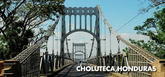
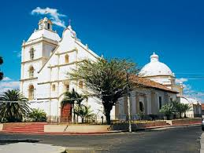

 Choluteca, oficialmente denominada Ciudad de Choluteca y también conocida como la Sultana del Sur, es una de las ciudades coloniales más antiguas de la república de Honduras. Ubicada a 133 km de Tegucigalpa en la zona sur de Honduras, en la ribera del río Choluteca, en el departamento que lleva su mismo nombre.
La ciudad es la más grande e importante de la zona sur de Honduras y zona de encuentro regional, en la actualidad cuenta con un gran auge económico5 y experimenta un gran crecimiento demográfico.
 Administrativamente, la ciudad de Choluteca se encuentra en el municipio del mismo nombre, el cual tiene una superficie de 1069 km,7 siendo el gobierno de la ciudad y el municipio el mismo. La ciudad de Choluteca es la cabecera (capital) del Departamento de Choluteca.
Con un desfile, que incluye carrozas alegóricas, un festival gastronómico y muchas otras actividades culturales, artísticas, cívicas y religiosas, los habitantes, las fuerzas vivas y las autoridades de Choluteca celebran por todo lo alto, hoy 1 de octubre, el aniversario de Choluteca.